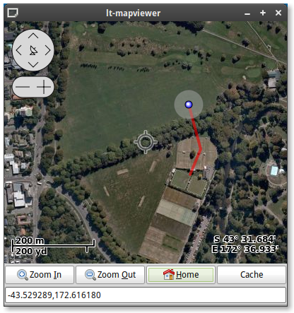

A Gtk+ widget (and Python bindings) that when given GPS co-ordinates, draws a GPS track, and points of interest on a moving map display. Downloads map data from a number of websites, including openstreetmap.org. The library has excellent performance and is currently used in a number of Gtk+ and Maemo applications.


Currently supports a number of different mapping sources
It also has the following features
osm-gps-map should be packaged by your distibution. On Debian, Ubuntu or similar, you can install using the following;
sudo apt-get install libosmgpsmap-dev python-osmgpsmap
To build from source on Linux you will need to install the following dependencies;
Once the dependencies have been installed you can build osm-gps-map. On Linux perform the following;
./configure; make; make install #C library cd python; ./configure; make; make install #Python bindings
To run or build on Windows you will need to install the following;
You may download any of the following archives
You can also clone the project with Git by running:
$ git clone git://github.com/nzjrs/osm-gps-map